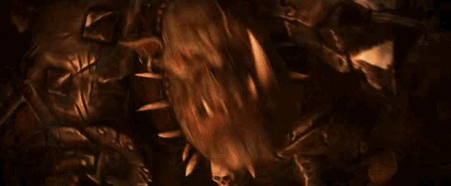

Orcs & Goblins
When a greenskin horde descends upon the land it leaves little in its wake save devastation and ruin. They raid ceaselessly, carrying war and barbarism to every corner of the world under the resounding roar of their Waaagh!. Time and again, Orc and Goblin armies arise without warning, their direction and intent dangerously fickle and unpredictable, but with one surety – that nowhere is safe from their attacks for long. These loose confederations of squabbling tribes are commanded by an especially powerful and ambitious Warboss, and amount to raucous mixes of greenskins and other violentminded creatures.
Select a unit type below for more information about their in-game stats and background!
Unit Stats:
Famous Orc Lords:
Grimgor Ironhide
Even for a Black Orc, Grimgor's thirst for war was exceptional. If a single day went by without a battle, Grimgor was known to start camp-decimating arguments, his one good eye blazing with eagerness to find fault and start a good scrap. Two days without a battle and Grimgor would smite anything he could reach, save (perhaps) his fellow Black Orcs. No one knows for sure what would happen if three days without a battle ever occurred, but even scarred veterans tremble just to think of it. This unquenchable thirst for battle is a sign that marks out a Warboss for leadership, a sign that the Orc is favoured by Gork (or Mork). In a hulking Black Orc with unmatched fighting skills and ferocity it has marked out Grimgor for greatness; the prophet and harbinger of Gork (or Mork).
Wurrzag
Wurrzag is beholden to no tribe nor lord, only the whisperings of the Greenskin gods in his addled mind. Ever since Wurrzag Ud Ura Zahubu dragged the Bone Nose tribe up to greatness - after accidently turning their original Shaman into a Squiggly Beast - he has claimed to speak directly for Gork and Mork, da Great Green Godz. The Savage Orc Shaman has crossed the Southlands and headed deep into the Badlands, joining tribes and rekindling the spark of the Waaagh! in them that they may have lost. His words and presence can lift a tribe to greater things in the name of Gork (or perhaps Mork). In the Land of the Dead, Wurrzag joined the Spotted Skullz tribe, leading them to victory against the Undead legions and their animated statuary. There are many other examples of Wurrzag's interventions, and so his reputation has spread far and wide. Among most tribes, his arrival is seen as a blessing that Mork (or Gork, maybe) has chosen them for some special mission. Not all Warbosses are so welcoming, however. Some view Wurrzag with suspicion, reckoning he comes always on the eve of events set in motion already, taking the credit even though it was the Bosses that did all the zoggin’ work in the first place! They argue that a Waaagh! can happen and countless do without Wurrzag present to trigger them. Whatever the truth, Wurrzag certainly believes he was put on this mortal plane as a tool of the Green Godz, and when Orcs believe something, then fate has a habit of making it true...
Unit Stats:
Examples:
Orc Boyz
Orcs, often known as Orc Boyz or just "da Boyz", are the hard-fighting infantry found at the heart of most Greenskin tribes. Goblins are more prolific, but it is the Orcs that do the bulk of the bloody work in most battles. That is okay with all parties, as Orcs are a warrior race and there is nothing they like half as much as a good scrap. In fact, it is hard to get Orcs to stop fighting. They are an overly pugnacious lot and if no one else is around they will pummel each other just to keep their spirits up. Luckily, Orcs do not register pain as do other races. A typical green-skinned lout won't let a minor injury, such as a severed limb, keep him from fighting. Orcs are so tough and resilient that if the arm can be found and sewn back on (however crudely) it will heal quickly. Orcs naturally take their robust physique for granted and regard everyone else as weak, puny or "squishy".
Goblins
Goblins often live on the cast-offs of other races and frequently thrive in the shadows of their larger brawnier cousins, the Orcs. They are, in general, a miserable treacherous race of petty thieves and vicious cutthroats. Goblins can be found just about anywhere, but are often divided up between several distinct sub-species that are fairly unique in their culture or physiology than the more common Goblin.
Unit Stats:
Examples:
Orc Boar Boys
The mounts that these Orcs ride are an extremely stubborn and vicious breed of the more common Wild Boar, that have grown to such a size that they are almost as large as an Imperial warhorse, but considerably far more bulkier.
Black Orcs
The Black Orcs are amongst the biggest, meanest, strongest, and most brutal of all the Greenskin races. Named after their darker shade of green, their thick black-coloured armour and their horrendously foul odour, the Black Orcs consider themselves the ultimate Greenskin warrior. These beasts are grim and singularly focused on war, an occupation that they take far more seriously than even others of their own kind. Equipped with some of the best weapons and armour in the tribe, these fierce fighters provide their race with a much more reliable source of elite, powerful fighters.
Unit Stats:
Examples:
Giants
Giants are a large, lumbering and highly unintelligent race of brutish nomads that roam the Warhammer World seeking battles and food both large and small. Descendants of the long-forgotten Skytitan civilisation, Giants are extremely few in numbers but they make up for this disadvantage with bone-crushing strength. To most Greenskins, a Giant is a bellowing, cursing display of raw might, ruthless aggression and mindless savagery -- traits that are highly respected and sought after within Greenskin society.
Squig Hoppers
Squig Hoppers bound madly into battle, wreaking havoc on anything they collide with. Each hurtling squig has a cackling grot clinging to its back, flailing wildly at nearby enemies as he tries vainly to steer his weird steed.
Game Book
Each army requires a gamebook to play the stats listed above are just an example of what you will find in each army book! they contatin info and stats to help you field your army as well as fun history and infromation about your selected faction.